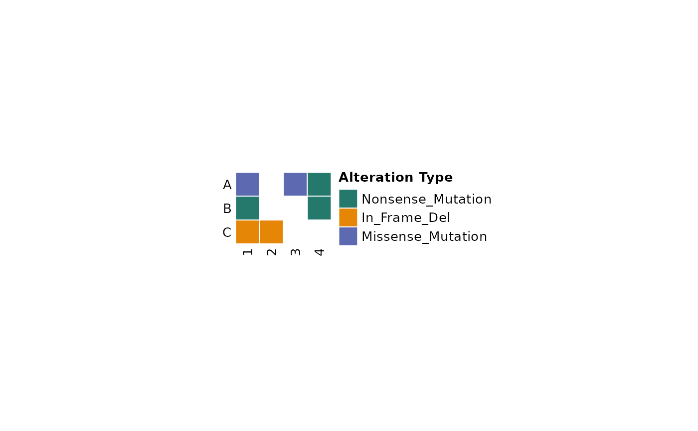

Comut Plot
comut.RdComut Plot
Usage
comut(
data,
metadata,
variant_colors,
show_variant_legend = TRUE,
col_maps,
features_of_interest,
text_annotation,
text_annotation_col = "white",
text_annotation_size = 8,
barplot_data,
grob = FALSE,
body_width,
body_height,
body_border = FALSE,
cell_height = 0.25,
cell_width = 0.25,
legend_side = "right",
legend_fontsize = 10,
anno_fontsize = 8,
add_borders = FALSE,
show_barcodes = TRUE,
id_order,
ids,
...
)Arguments
- data
df with Tumor_Sample_Barcode, Hugo_Symbol, Variant_Classification, and optional column for text annotations
- metadata
df with Tumor_Sample_Barcode, and metadata columns
- variant_colors
colorscheme for alteration types, named list
- show_variant_legend
whether the legend of variant types should be include. Default is TRUE.
- col_maps
named list of color maps. Names should match columns of metadata
- features_of_interest
optional vector of genes of interest
- text_annotation
How to annotate comut plot squares if desired, must be a column in data
- text_annotation_col
Color of text annotations, default is white.
- text_annotation_size
Size of text annotations, default is 8.
- barplot_data
named list of named lists. Each sub list should contain data, colors, and legend params for plots
- grob
whether to return grob object instead of plotting. Useful for other frameworks.
- body_width
width of the heatmap body in inches.
- body_height
height of the heatmap body in inches.
- body_border
boolean to add border to comut body.
- cell_height
height of the heatmap cells. Also applies to annotations.
- cell_width
width of the heatmap cells.
- legend_side
side of heatmap to put the legend on. Default is right
- legend_fontsize
Font size for legends. Default is 10
- anno_fontsize
Font size for annotations. Default is 8
- add_borders
whether padding should be added around each box in the comut body.
- show_barcodes
whether the sample ids should be shown in the plot
- id_order
optional vector with order of Tumor_Sample_Barcodes
- ids
optional vector of Tumor_Sample_Barcodes to show
- ...
variable arguments to pass to Heatmap call
Examples
input_maf <- data.frame(
Tumor_Sample_Barcode = c("1", "1", "1", "2", "3", "4", "4"),
Hugo_Symbol = c("A", "B", "C", "C", "A", "A", "B"),
Variant_Classification = c(
"Missense_Mutation", "Nonsense_Mutation",
"In_Frame_Del", "In_Frame_Del", "Missense_Mutation",
"Nonsense_Mutation", "Nonsense_Mutation"))
ComutR::comut(data = input_maf)
